Prelab
Just like in lab 5, I developed a bluetooth command called "STABILIZE_ORIENTATION". It takes in the same inputs as my "DRIVE_TO_WALL_PID" command. It takes in the Kp, Ki, and Kd values for PID control. It also takes in the length of time in milliseconds for how long I want the robot to keep correcting its orientation. It also takes in a 0 or 1 value for whether or not I want the robot to stop after it has corrected its orientation.
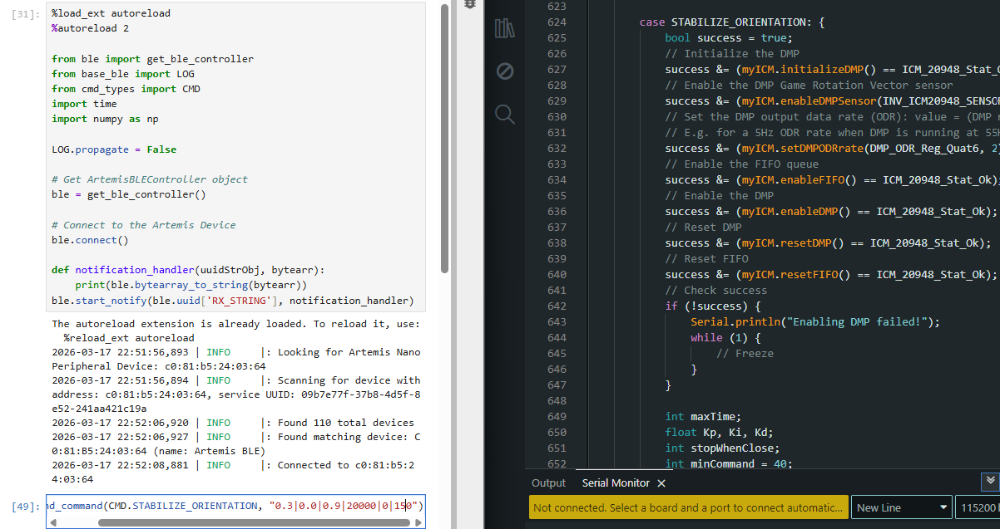
I then sent data back with these two if statements. I stored the data in arrays before sending them back over bluetooth with for loop commands like previous labs. Before the while loop where my PID controlled motor commands are, I initialize i and k to 0 and every time the loop completes, I update them. I used two separate index counters so that I could decouple them later on during extrapolation.
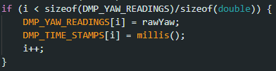
I used a notification handler similar to other labs to receive the data and store them into an array.
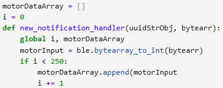
Lab Discussion
You should integrate your gyroscope to get an estimate for the orientation of the robot. Are there any problems that digital integration might lead to over time? Are there ways to minimize these problems?
Integreating the gyroscope to get an estimate for the orientation of the robot works, but quickly the readings drift as discussed in the IMU lab. Any measurement offset is integrated and adds up over time causing the drift, so an imu that starts at 0 degrees yaw will drift to 10 degrees soon without even moving. I could minimize it by using a complimentary filter like in the IMU lab, where I used the accelerometer to correct the gyroscope since the accelerometer doesn't integrate over time and doesn't drift. However, this solution didn't really work well last time as seen by the image below where the complimentary filtered data was still pretty noisy, and also, still drifted a little bit.
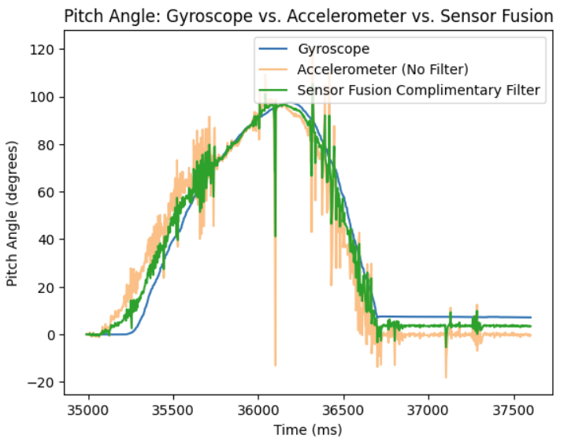
Considering the hint from the lab, I took a look at the DMP and tested Example7_DMP_Quat6_EulerAngles from the ICM 20948 library. The DMP was far superior in testing, never drifting, and wasn't noisy at all. I modified the DMP to have an output data rate (ODR) of 18.33 hz by changing the value variable below to 2. As explained in this link: https://fastrobotscornell.github.io/FastRobots-2026/tutorials/dmp.html, by slowing down the output rate of the DMP, the control loop should run faster than the DMP can generate data, so that the queue storing the data, doesn't fill up too much, causing a memory overflow, causing the chip to crash.
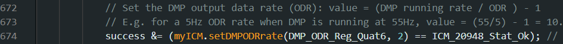
Are there limitations on the sensor itself to be aware of? What is the maximum rotational velocity that the gyroscope can read (look at spec sheets and code documentation on github). Is this sufficient for our applications, and is there a way to configure this parameter?
Yes, on the ICM 20948 IMU's data sheet, the maximum rotational velocity that the gyroscope can read is 2000 degrees per second (dps). This limitation probably won't affect me since my robot is not capable of making 6 rotations in one second.
Does it make sense to take the derivative of a signal that is the integral of another signal. Think about derivative kick. Does changing your setpoint while the robot is running cause problems with your implementation of the PID controller? Is a lowpass filter needed before your derivative term?
If I was using the gyroscope alone and integrating the data, taking the derivative would be redundant since you are literally just differentiating the integral which gives you the same value before integrating. However, I chose to use the DMP, so I still needed to take the derivative.
Think about derivative kick. Does changing your setpoint while the robot is running cause problems with your implementation of the PID controller?
Changing my setpoint while the robot is running caused issues because it would form a massive jump in derivative values since the derivative is calculated with the current error minus the previous error. If the current error jumped all of a sudden because I changed the setpoint, it would cause the derivative to spike. A lowpass filter could solve this since it only takes a little bit of the current derivative compared to taking a lot of the added portions of the past derivatives to make the derivative for the control.
Is a lowpass filter needed before your derivative term?
A lowpass filter would be helpful for smoothing out the jump. Below is how I implemented it. I used an alpha of 0.05 since that number was still responsive enough for what I wanted, without making the derivative jump too much.
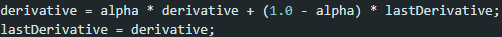
Programming Implementation
Have you implemented your code in such a way that you can continue sending an processing Bluetooth commands while your controller is running?
As explained above, I made it so that my bluetooth command takes in multiple inputs to tune my Kp, Ki, and Kd values, and also the minimum motor speed. The first input is for Kp, the second if for Ki, the third is for Kd, the fourth is for the amount of time I want to run the robot's orientation control loop, the fifth is for whether or not I want the robot to stop after it has corrected its orientation, and the sixth input is for the minimum motor PWM signal the controller can send to the drivers. Setting the minimum PWM signal helps me account for loss in battery charge and make it so the robot isn't wasting energy trying to rotate the robot with too little power. It also makes the changes in yaw orientation more snappy since the motor control signal doesn't need to build up to the minimum to get it moving.
Think about future applications of your PID controller with regards to navigation or stunts. Will you need to be able to update the setpoint in real time?
Yes, I will need to be able to update the setpoint in real time since I will need to drive around things and follow a specific path. This would require needing to change the setpoint over time.
Can you control the orientation while the robot is driving forward or backward?
For now, with my current code, I cannot. Planning ahead, I don't want my robot to drive forward, stop, and turn. I want the robot to be able to make smooth arcing drive trajectories, so changing orientation while the robot is driving forward or backward will be necessary. For this to work, I would need to use the linear PID with my orientation PID control loop.
Below is how I started the DMP and got in all the inputs.
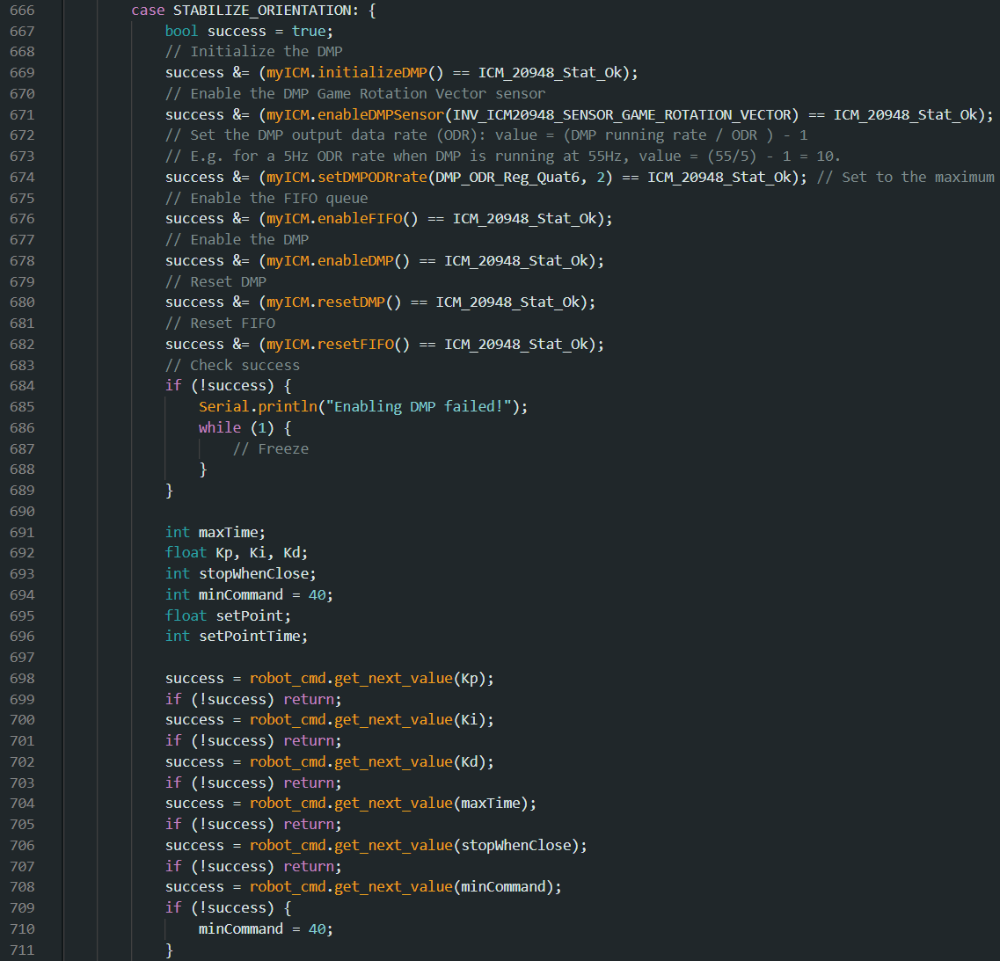
Below is how I read DMP inputs. It uses the extrapolation algorithm from lab 5 to fill in the gaps of where the robot is since the output data rate (ODR) of the DMP is 18.33 hz which was too slow for the robot to wait on.
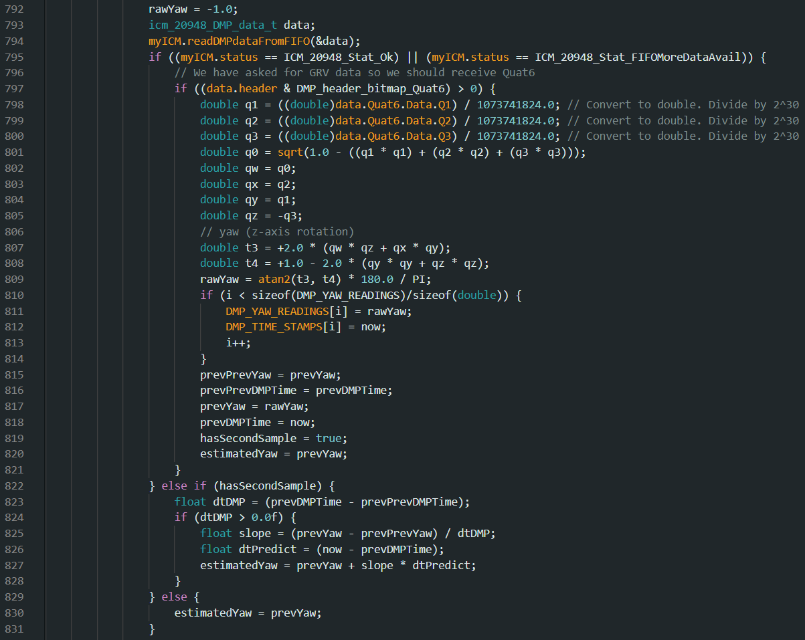
Below is how I computed the PID motor control. It is almost identical to the linear PID controller.
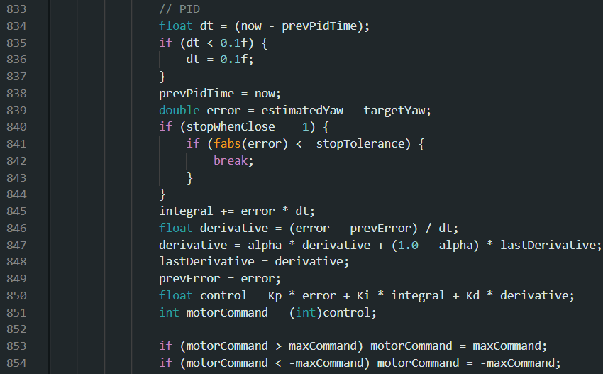
The DMP on my robot reads that if the robot is angled to the left of 0 degrees, it is a negative angle, and if the robot is angled to the right of 0 degrees, it is a positive angle. This means that my PID controller will give a negative PWM value if the robot is to the left of 0 degrees, and it will return a positive PWM value if the robot is to the right of 0 degrees. I combined this with how differential drive robots work to make one side go forward and one side backwards to get the robot to turn in place.
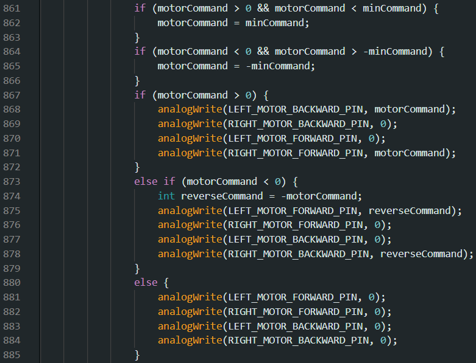
Testing
Below are plots testing with Kp = 0.3, Ki = 0.0, and Kd = 0.9 with a minimum motor speed of 150 with the robot's setpoint set to 0 degrees. With these values, the robot overshoots slightly, but is still very responsive to when it is kicked. The steep motor inputs compared to the steep change in angle shows it is pretty responsive to being kicked.
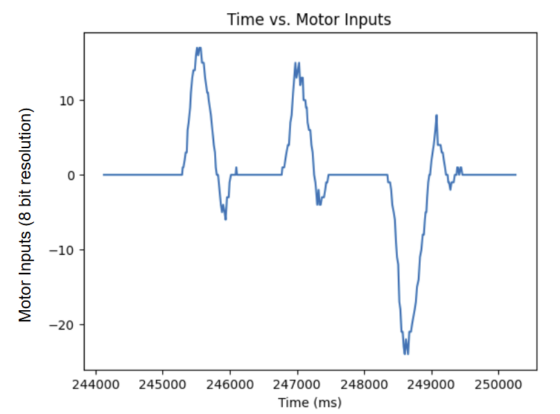
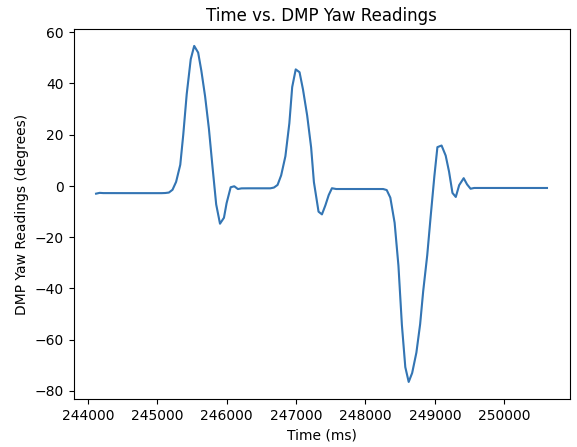
Below are videos of me moving my robot around. I taped over the tires because there was too much friction between the floor and the rubber tires which caused the robot to get stuck on my carpet.
I then changed the setPoint mid run. The results are below.

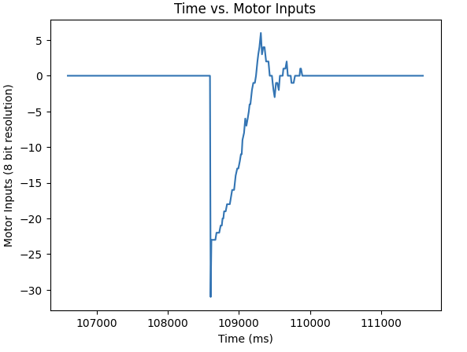
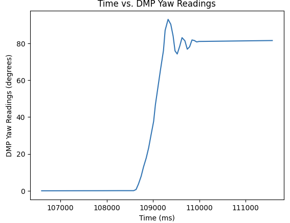
References
I referenced Evan Leong's website: https://evnleong.github.io/MAE4190/lab6.html, for some of the details and hints to answer the discussion questions.